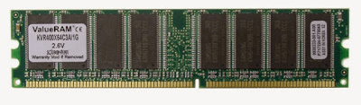
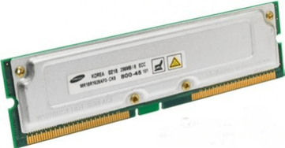

Ada beberapa monitor yang kita kenal, antara lain sebagai berikut:
socket prosesor adalah tempat dudukan prosesor pada motherboard. dibedakan menjadi 4 jenis, yaitu:
Processor merupakan otak dari komputer itu sendiri, secara mekanisme kerja processor bertugas untuk melakukan perhitungan serta menjalankan perintah input. Di Indonesia kita tahu ada 2 jenis processor yang paling digemari oleh masyarakat, yaitu INTEL dan AMD.
Merupakan sebuah processor buatan Intel Corporation. Masyarakat pasti tidak meragukan lagi dengan yang satu ini. Awal dibuat pada tahun 1968 yang mempunyai kelebihan sebagai berikut :
Ada beberapa tipe-tipe processor yang dihasilkan antara lain (1)4004 Micro processor, 8008 Microprocessor, 8080 Microprocessor, 8086 ? 8088 Microprocessor, 286 Microprocessor, Intel 386 TM, Intel 486 TM DX CPU Microprocessor, Intel Pentium Processor, Intel Pentium Pro Processor, Intel Pentium II Processor, Intel Pentium II Xeon Processor, Intel Celeron Processor1999, Intel Pentium III Processor1999, Intel Pentium III Xeon Processor2000, Intel Pentium 4 Processor2001, Intel Italium Processor2001, Intel Italium II Processor2002, Intel Pentium M Processor2003, Intel Pentium M 735/ 745/ 7552004, Intel Pentium 4 Extreme Edition2005, Intel Pentium D2005, Intel Core 2 Quad2006, Intel Quad Core Xeon2006, Intel Core i7 800, i5 dan Xeon 34002009.
Contoh processor :
Sama seperti Intel, AMD merupakan perusahaan semikonduktor multinasional yang bermarkas di Amerika Serikat tepatnya di Sunnyvale, California, Perusahaan ini merupakan perusahaan terbesar kedua setelah Intel Corporation untuk pemasok global mikroprosesor yang berdasarkan arsitektur x86, dan pada tahun 2007, Perusahaan ini menempati peringkat kesebelas dari segi pendapatan. AMD adalah kependekan dari Advanced Micro Device Inc. Merupakan pesaing utama intel. Processor jenis ini banyak diminati oleh penghobi game. Karena ada salah satu produknya yang dilengkapi dengan VGA Ati Radeon. Jika dibanding dengan intel, konsumsi daya AMD lebih besar, sehingga lebih boros listrik.
Produk Processor yang dihasilkan oleh AMD antara lain :
Contoh processor :
Apple Inc. perusahaan ini sebelumnya bernama Apple Computer, Inc. juga merupakan sebuah perusahaan multinasional dengan pusat kantornya di Silicon Valley, Cupertino, California, bergerak dalam bidang perancangan, pengembangan serta penjualan produk - produk elektronik, komputer pribadi, serta perangkat lunak komputer. didirikan tepatnya pada tanggal 1 April 1976 dan dinamakan secara resmi menjadi Apple Computer, Inc. kemudian 9 Januari, 2007, kata "Computer" dihapus dan fokus pada nama Apple pasca peluncuran produk iPhone. produk processor apple diantaranya :
Cyrix adalah salah satu perusahaan pengembang mikroprosesor yang berdiri pada tahun 1988,tepatnya di Richardson, Texas. pada tanggal 11 November 1997 perusahaan ini bergabung dengan National Semiconductor. dan kemudian diakusisi oleh VIA pada 1999. Mempunyai fitur kecepatan yang cukup optimal dan juga suhu kerja yang rendah. Namun secara kwalitas, masih dibawah intel dan AMD. Adapun processor yang dihasilkan oleh perusahaan ini antara lain : Cyrix FasMath, Cyrix 486SLC dan Cyrix 486DLC, Cyrix 5?86, Cyrix 6?86 (M1), Cyrix MII, Cyrix MediaGX, Cyrix MII-433GP, VIA C3? Processor, VIA CoreFusion? Processor Platform, VIA Eden? Processors, VIA C7? Processor, VIA PV530 Processor, VIA Nano? Processor, VIA Nano? X2 Processor.
International Business Machines Corporation ( IBM ) merupakan sebuah perusahaan yang berkantor pusat di Armonk, Town of North Castle, New York, Amerika Serikat, yang memproduksi serta menjual berbagai perangkat keras maupun perangkat lunak komputer. IBM sendiri didirikan tepatnya pada tanggal 16 Juni 1911, dan beroperasi sejak 1888, Produk - produk processor keluaran dari IBM antara lain: 8008, 8080, 8088/8086sx, 286, 80386 DX, IBM 486SLC2, Pentium Classic (P54C), Pentium Pro, Pentium II Xeon, IBM POWER4, IBM POWER5, IBM POWER6, IBM POWER7.
IDT ( Integrated Device Technology ) adalah perusahaan yang lebih kecil yang menghasilkan CPU dengan harga murah. berdiri pada tahun 1980 dan berkantor di San Jose, California Amerika serikat, IDT merupakan perusahaan pembuat processor WinChip yang diperkenalkan pertama kali pada Mei 1997, adapun processor yang dihasilkan dari perusahaan ini antara lain adalah : Winchip C6 (0.35 ?m), WinChip 2 (0.35 ?m), WinChip 2A (0.35 ?m), WinChip 2B (0.25 ?m), WinChip 3 (0.25 ?m).
Mungkin anda jarang atau belum pernah mendengar jenis processor ini, karena memang sebagian besar digunakan pada perangkat Handpone, music player dan router.
Dibuat pada tahun 1995 oleh Glen Henry dkk. Namun kemampuna processor ini masih kalah dibanding diatas
Semua data dan program yang dimasukkan melalui alat input akan disimpan terlebih dahulu di memori utama, khususnya RAM, yang dapat di akses secara acak (dapat diisi/ditulis, diambil, atau dihapus isinya) oleh pemrogram.
Cara membaca informasi dari RAM
Misalkan RAM bertuliskan PC2100. Angka 2100 itu artinya kecepatan transfer data dalam 1detik. Jadi, PC2100 itu memiliki kecepatan data 2,1Gb/detik. Kita juga dapat mengetahui jenisRAM (DDR1 atau DRR2) dari PC nya. RAM dengan PC 2100, 2700, dan 3200 termasuk DDR1,sedangkan RAM dengan PC 4200, 5300, atau 6400 termasuk DDR2. Jadi semakin besar angkaPC, kecepatan transfer datanya akan semakin cepat. Terkadang kita juga melihat tulisan DDR266, DDR533, DDR667. Angka itu juga dapat menunjukkan jenis RAM tersebut. RAM dengan DDR266, 333, dan 400 termasuk DDR1, sedangkan DDR533, DDR667, dan DDR800 termasuk DDR2. Angka-angka tersebut menunjukkan nilai kecepatan clock RAM yang bersangkutan. DDR400 berarti memiliki kecepatan clock 400Mhz. DDR333 berarti memiliki kecepatan 333MHz. Angka PC dan DDR saling berhubungan. Angka PC adalah nilai kecepatan clock RAM dikalikan 8. Jadi RAM DDR400 sama dengan RAM PC 3200, karena 400?8=3200. Sekarang kita kalikan semua :
RAM DDR 1 memiliki pin 184 buah, sedangkan DDR2 memiliki pin 240 buah. Jadi RAM DDR1 tidak bisa dipasangkan pada motherboard yang hanya support DDR2, karena jumlah pinnya berbeda. Jika sebuah motherboard mensupport RAM DDR333, maka DDR400 tetap bias dipasangakan pada motherboard tersebut, tetapikecepatannya 333MHz(menyesuaikan yangrendah). Begitu juga jika motherboard support DDR667, maka tetap bisa dipasangkan DDR800, tetapi kecepatannya tetap 667 MHz.
Berikut ini jenis RAM dan fungsi beserta ciri-cirinya
Adalah RAM yang dirancang untuk bisa sinkron dengan frekuensi clock dari CPU. Ada dua jenis SDRAM, yaitu SDR (Single Date Rate) dan DDR (Double Date Rate). SDR mengirim data pada satu transisi clock yaitu saat naik atau turun saja. Sedangkan DDR mengirimkan data pada dua transisi clock naik dan turun. Ini membuat RAM DDR dua kali lebih cepat dari RAM SDR. Dalam perkembangannya ada beberapa ada beberala jenis RAM DDR SDRAM, yaitu DDR atau DDR1, DD2, DDR3, DDR4 dan yang paling terbaru DDR5. RAM DDR pertama atau dikenal dengan DDR1 muncul pada era prosesor intel Pentium, kemudian digantikan dengan RAM DDR2 pada era prosesor DUAL CORE kemudian pada era prosesor Core i3 digantikan dengan RAM DDR3. Kini perkembangan RAM mencapai versi DDR4 yang membedakan adalah letak pada kecepatan transfer datanya yang meningkat seiring dengan perkembangan chipset dan prosesor.
RAM DDR1 lahir di era computer Pentium 4 sekitar tahun 2000. Memiliki transfer rate antara 200-400 MT/s dengan kecepatan clock sebesar 100-200 MHz. RAM ini mempunyai ciri jumlah notchnya yang hanya satu. Notch adalah coakan pada PCB RAM yang menjadi panduan saat memasang RAM. RAM DDR1 menggunakan tipe DDR chip memory (IC) yang digunakan adalah TSOP (Thin Small-Outline Package). Bentuknya empat persegi panjang dengan kaki-kaki di bagian kiri dan kanan. Jumlah pin yang terdapat di DDR1 sebanyak 184 buah (92 pin di setiap sisinya).
Ada beberapa seri jenis DDR1 ini, yaitu:
RAM ini lahir pada era computer dual core sekitar tahun 2008. Perbedaan fisik RAM DDR2 dengan DDR1 adalah letak notch yang digeser agak ke pinggir. DDR2 memiliki transfer rate antara 400-1066MT/s dengan kecepatan clock 200-533 MHz. Jenis chip memori yang digunakan oleh DDR2 adalah BGA (Ball Grid Away). Bentuknya ada yang empat persegi panjang ada pula yang berbentuk bujursangkar. DDR2 memiliki pin sebanyak 240 buah (120-pin di setiap sisi).
Ada beberapa seri jenis DDR2 ini, yaitu:
RAM DDR3 ini lahir pada era computer Core i3. Ciri fisiknya adalah notchnya digeser lagi agak ke pinggir disbanding DDR2. RAM ini mempunyai konsumsi daya yang lebih rendah 40% disbanding dengan RAM DDR2. Hal ini memungkinkan RAM DDR3 dapat dioperasikan pada tegangan 1.5V yang lebih rendah dari RAM DDR (sebesar 2.5 v) dan DDR2 (sebesar 1.8V). RAM DDR3 memiliki transfer rate antara 800-1600 MT/s. RAM DDR3 memiliki fitur baru yaitu ASR (Automatic self-Refresh) dan SRT (Self-Refresh Temperature). Ram DDR3 sebanyak 240 buah, hanya saja letak notch lebih kearah kiri.
Jenis-jenis DDR3 ini antara lain: DDR3-800D, DDR3-800E, DDR3-1066E DDR3-1066F, DDR3-1333F, DDR3-1600G, DDR3-2133K.
RAM ini merupakan generasi terbaru dari RAM DDRSDRAM dengan transfer data mencapai 2133-3200 MT/s. RAM ini juga lebih efisien dengan tegangan kerja sebesar 1.2V. DDR4 juga terdapat fitur baru seperti DBI (data bus pembalikan), CRC (Cyclic Redundancy Check) dan CA Paritas. Fitur-fitur ini meningkatkan integritas sinyal RAM DDR4 dan tentu saja meningkatka stabilitas transmisi data/akses. Jika dilihat dari letak soket atau coakan, RAM DDR1 letak sekat berada bagian tengah dari Memory tersebut, sedangkan untuk DDR2 berada sedikit ke kiri, dan untuk DDR3 berada lebih ke kiri lagi.
Jenis RAM ini merupakan memori semikonduktor yang memerlukan kapasitor sebagai tumpuan untuk menyegarkan data yang ada di dalamnya. RAM ini memiliki kecepatan lebih tinggi dibandingkan dengan EDO RAM, namun lebih rendah dibandingkan SRAM. DRAM memiliki frekuensi kerja yang bervariasi antara 4.7 MHz hingga 40 MHz.
Komponen ini diperkenalkan pada tahun 1995 dengan kecepatan 600Mbps. Pada tahun 1997, kecepatan RDRAM meningkat hingga 700 Mbps, dan pada tahun 1998 menjadi 1,6GBps. RAM ini awalnya dikembangkan untuk processor Pentium 4 untuk keperluan perangkat gaming. RDRAM mempunyai 184 pin.
RAM ini tidak memerlukan kapasitor dan tidak memerlukan penyegaran secara berkala sehingga kinerja bisa lebih cepat. Sayangnya SRAM memiliki kekurangan yakni biaya produksinya yang mahal. RAM ini hanya tersedia dalam kapasitas kecil dan digunakan untuk bagian yang benar-benar penting. Kecepatan SRAM mampu mengimbangi kecepatan processor 500MHz atau lebih.
RAM ini dikembangkan tahun 1995 mempunyai slot memori 72 pin. RAM ini cocok dipasang untuk semua computer Pentium.
Jenis RAM ini merupakan bentuk asli atau awal dari DRAM. Laju transfer maksimum untuk cache L2 mendekati 176 MB per detik. FPM bekerja pada rentang frekuensi 16MHz hingga 66 MHz dengan akses waktu hingga 50ms.
Flash RAM merupakan jenis memori berkapasitas rendah yang digunakan pada perangkat elektronika seperti TV,VCR, hingga ponsel lama. Memori ini dipasang pada perangkat yang memerlukan refresh dengan daya yang kecil.
Memori ini merupakan jenis memori yang digunakan pada perangkat notebook. Bentuk fisiknya cukup ringkas, kira-kira setengah dari besaran DDR RAM sehingga lebih menghemat uang. Jenis memori ini biasanya mengikuti perkembangan RAM untuk computer desktop.
Dari namanya, ROM hanya dapat dibaca sehingga pemrogram tidak bisa mengisi sesuatuke dalam ROM. ROM sudah diisi oleh pabrik pembuatnya berupa sistem operasi yang terdiridari program-program pokok yang diperlukan oleh sistem komputer, seperti misalnya program untuk mengatur penampilan karakter di layar, pengisian tombol kunci papan ketik untuk keperluan kontrol tertentu, dan bootstrap program. Program bootstrap diperlukan pada saat pertama kali sistem komputer diaktifkan. Proses mengaktifkan komputer pertama kali ini disebutdengan booting, yang dapat berupa cold booting atau warm booting. Cold booting merupakan proses mengaktifkan sistem komputer pertama kali untuk mengambil program bootstrap dari keadaan listrik komputer mati (off ) menjadi hidup (on). Sedangkan warmbooting merupakan proses pengulangan pengambilan program bootstrap pada saat komputer masih hidup dengan cara menekan tiga tombol tombol pada papan ketik sekaligus, yaitu Ctrl, Alt,danDel. Proses ini biasanya dilakukan bila sistem komputer macet, daripada harus mematikan aliran listrik komputer dan menghidupkannya kembali.
Instruksi-instruksi yang tersimpan di ROM disebut dengan microinstruction atau firmware karena hardware dan software dijadikan satu oleh pabrik pembuatnya. Isi dari ROM initidak boleh hilang atau rusak karena bila terjadi demikian, maka sistem komputer tidak akan bisa berfungsi. Oleh karena itu, untuk mencegahnya maka pabrik pembuatnya merancang ROM sedemikian rupa sehingga hanya bisa dibaca, tidak dapat diubah-ubah isinya oleh orang lain. Selain itu, ROM bersifat non volatile supaya isinya tidak hilang bila listrik komputer dimatikan. Pada kasus yang lain memungkinkan untuk merubah isi ROM, yaitu dengan cara memprogram kembali instruksi-instruksi yang ada di dalamnya. ROM jenis ini berbentuk chip yangditempatkan pada rumahnya yang mempunyai jendela di atasnya. ROM yang dapat diprogramkembali adalah PROM (Programmable Read Only Memory), yang hanya dapat diprogram satukali dan selanjutnya tidak dapat diubah kembali. Jenis lain adalah EPROM (Erasable Programmable Read Only Memory) yang dapat dihapus dengan sinar ultraviolet serta dapatdiprogram kembali berulang-ulang. Disamping itu, ada juga EEPROM (Electrically Erasable Programmable Read Only Memory) yang dapat dihapus secara elektronik dan dapat deprogram kembali.
Pembacaan kapasitas hard disk pada sebuah sistem , seringkali atau bahkan selalu, tidak sesuai dengan kapasitas yang tertera pada fisik hard disk tersebut. Sebagai contoh, sebuah harddisk berkapasitas 80 GB secara fisik, akan terbaca sebagai 74,5 GB (kurang lebih) setelahdiformat. Semakin besar kapasitas hard disk, semakin besar pula kapasitas yang ?hilang?.Sebetulnya hal ini merupakan sebuah hal yang wajar. Namun apabila kita tidak mengetahui bagaimana cara menghitung kapasitas hard disk yang benar, maka kita akan bingung dengan?hilang?-nya kapasitas hard disk tersebut.
Produsen harddisk menggunakan sistem desimal untuk menghitung kapasitas hard disk yang diproduksinya.
1 MB = 1.000.000 bytes.
1 GB = 1.000.000.000 bytes.
1 TB = 1.000.000.000.000 bytes.
Bytes merupakan ukuran terkecil dalam satuan kapasitas komputer, dan untuk sementara iniTerrabytes (TB) merupakan satuan terbesar yang bisa ditemukan dalam kapasitas Hard Disk. pada windows sistem membaca :1 KB = 1024 bytes
1 MB = 1024 KB, dan seterusnya
Sehingga, apabila sebuah hard disk berkapasitas 80 GB, maka Kapasitas pabrik = 80GB x 1.000.000.000 = 80.000.000.000 bytes Kapasitas di sistem (dihitung secara runut dari kapasitas terkecil) 80.000.000.000 / 1024 = 78.125.000 KB 78.125.000 / 1024 = 76.293,94531 MB 76.293,94531 / 1024 = 74,50581 GB Sehingga, sebuah hard disk yang berkapasitas 80 GB secara fisik akan terbaca sebagai 74,5 GB(kurang lebih) pada saat dibaca oleh system.berikut ini gambar untuk hardisk ata/pata dan sata
Floppy disk adalah media disk penyimpanan yang terdiri dari media penyimpanan magnetis tipis dan fleksibel, disegel dalam plastic berbentuk persegi atau persegi panjang.. cakram flopy disk disebut juga disket. Berkembang sejak pertengahan 1970-an hingga 2000an. Alat untuk membaca disket sebagai tempat menulis menulis dan menyimpan data disebut floppy drive.
Sebuah perangkat keras di dalam komputer yang berfungsi untuk memutar dan membaca piringan CD. CD ROM singkatan dari Compact Disk Read only memory.
Komponen computer yang mengubah data digital ke dalam bentuk grafis yang dapat ditampilkan pada monitor. Peran awal dari sebuah kartu grafis adalah mengirim piksel ke layar, serta memanipulasi grafis sederhana seperti pindah blok ( seperti kursor mouse), ray tracing, menelusuri polygon, dll.
Power supply digunakan untuk menyuplai arus listrik yang sebelumnya diubah dari bentuk arus AC menjadi DC untuk memberi daya pada komponen computer seperti motherboard, harddisk, CD room, floppy disk maupun komponen lain yang memerlukan daya. Pada saat ini dikenal 2 jenis power supply yaitu power supply AT dan power supply ATX.
Power supply AT adalah power supply tipe lama yang digunakan pada computer XT, AT 286-386-486- Pentium- sebagian Pentium II dan sebagian Pentium III. Terdiri dari 12 pin.
Ciri utama:
Power supply ATX adalah perkembangan dari AT dengan perubahan pada system on/off, daya, system penyalur ke motherboard. Terdapat dua macam, yaitu konektor 20 pin atx dan konektor 24 pin atx.
Ciri utama:
Setiap Kabel konektor mempunyai peranan dan fungsi yang berbeda-beda. Berikut ini adalah fungsi konektor power supply:
Kabel power digunakan untuk menyambungkan power CPU ke jala-jala listrik.
PATA (Parallel ATA) adalah kabel yang digunakan untuk menyambungkan dari computer (motherboard) ke harddisk/drive optik. Karena parallel penggunaan kabelnya banyak, yaitu kabel IDE.
SATA (Serial ATA) merupakan pengembangan dari ATA menggunakan system serial yang bekerja secara multiplexer sehingga irit kabel.
Kabel yang digunakan untuk menghubungkan monitor ke slot vga pada motherboard
Bagian ini digunakan untuk menerima ataupun mengirim data ke luar sistem. I/O Port juga biasa disebut dengan bagian interface (antar muka) karena peralatan input dan output di atasterhubung melalui port ini . Gambar di bawah ini adalah slot bagian dalam mainboard
Port yang mempunyai kemampuan transfer data dengan kecepatan standar parallel port200Kb/sekon, dengan kabel konektor adalah 25 pin. Peralatan yang support adalah printer,scanner.
Port yang mempunyai kemampuan transfer data dengan kecepatan lebih rendahdisbandingkan dengan jenis port parallel. Kabel konektor untuk COM1 adalah 9 pin danuntuk COM2 adalah 25 pin. Peralatan yang support adalah printer, scanner, mouse dan modem.
Port Universal Serial Bus merupakan port universal bagi peralatan yang bekerja dengantranmisi data secara serial. Peralatan yang support adalah printer, scanner, mouse dan modem.
Port yang dipakai oleh harddisk atau CDROM, ada dua buah pada motherboar yaitu sebagaimaster dan slave (IDE 1 dan IDE 2), IDE 1 untuk harddisk.
Biasanya digunakan oleh computer model lama. Tipe slot ini yaitu 8 bit dengan kecepatantransfer ratenya 0,625 MB/sekon
Biasanya digunakan sound card, VGA card dan LAN card. Tipe slot ini yaitu 47 bit dengankecepatan transfer ratenya 264 MB/sekon.
Biasanya digunakan oleh VGA. Kecepatan transfer ratenya lebih tinggi dari PCI